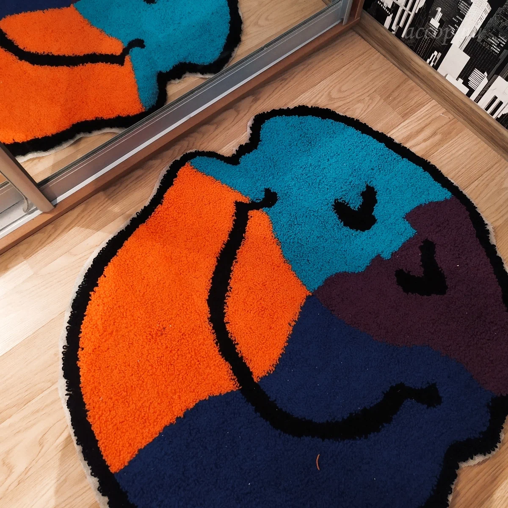

Хобби: как увлечение может стать любимой работой
16 февраля
Говорят, в жизни человек должен иметь 3 хобби:
- приносит ему заработок,
- держит его в форме,
- дает возможность отдохнуть ментально.
21 век удивителен настолько, что сейчас можно зарабатывать практически на любом из своих увлечений, если поступить правильно и рассчитать стратегию. Перед вами ТОП - 3 хобби, которые могут стать источником заработка.
1. Изобразительное искусство (картины)
Сейчас многие ценители искусства готовы купить уникальные холсты для своих коллекций или интерьера. Даже если вы никогда не учились рисовать - абстракционизм вам в помощь. Интерьерные картины могут быть абсолютно разными. А если вы все же занимаетесь искусством не бойтесь начинать продавать свои работы. Сейчас существуют множество сайтов с аукционами, да и социальные сети и самопродвижение никто не отменял. Не забываем про диджитал картины, они тоже могут иметь успех.

2. Дизайн (графический, интерьерный, фэшн)
В современных реалиях локальные бренды или человек, который занимается созданием собственной продукции может иметь большой успех. Стоит ли говорить о том, насколько популярны графические дизайнеры? Думаю о них знаю все. Дизайнеры интерьеров также сейчас могут работать в онлайне, так как существует множество программ и сайтов для создания макетов и планов.

3. Вязание, создание бижутерии, ковровая вышивка (создание современных ковров разной формы)
То, что человек делает самостоятельно, своими руками ценится все больше. Массовое производство не так цепляет взгляд, особенно в мире насмотренности и эстетики. Многие лидеры мнений хорошо заплатят за рукодельную сумочку из бусин или ковер с их любимым персонажем или дизайном. Они же помогут продвинуться и получить больше заказов.
Главное правило:
- Не бояться
- На каждый товар, найдется свой покупатель
- Если вы горите своим хобби, то сейчас самое время сделать из него любимую работу